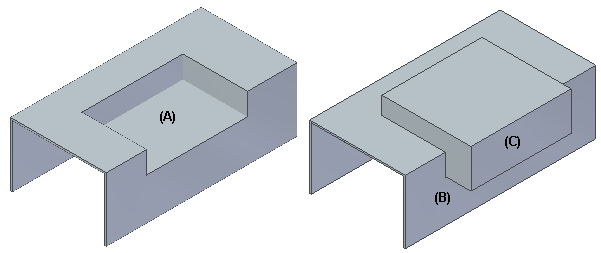
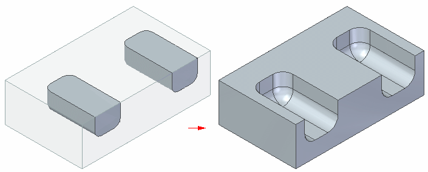
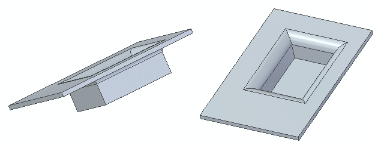
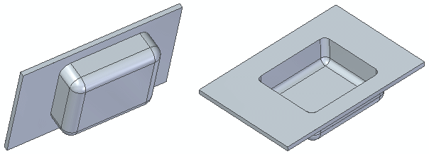

Emboss features
You can use the Emboss command to create an emboss feature (A) on a selected body (B) using another selected body (C) as the embossing tool.

You can select multiple bodies when you define the embossing tool.

Constructing emboss features
When you construct an emboss feature, you can use the options on the Emboss command bar and Emboss Options dialog box to determine the resulting emboss feature.
For example, you can use the Thickness option on the command bar to apply thickness to the tool body prior to embossing the target.

If you do not select this option, the clearance body is subtracted from the target.

You can use the Direction option on the command bar to flip the direction of the emboss feature.

If there are multiple embossing tools, the flip direction is the same for all tools. If you want a different tool direction for different tools, you must run the command multiple times and select the tools individually.
If the target body is a sheet metal model, you can use the Include die-side rounding option on the Emboss Options dialog box to round the die side edges or the emboss feature.

You can use the Include punch and punch-side rounding option to round the punch side corners of the emboss feature.

Adding emboss features in flatten mode
You can add an emboss feature to a sheet metal model only when the tool body is a construction body. In the flattened mode, if an emboss feature is added across a bend the bend and bend centerlines are maintained.
How do I
Emboss a bodyEdit the thickness value of an emboss feature in the synchronous environment
Dynamically edit an emboss feature in the synchronous environment
Edit an emboss feature in the ordered environment
Dynamically edit the clearance or thickness value in the ordered environment
Look up more details
Emboss commandEmboss command bar
Emboss Options dialog box